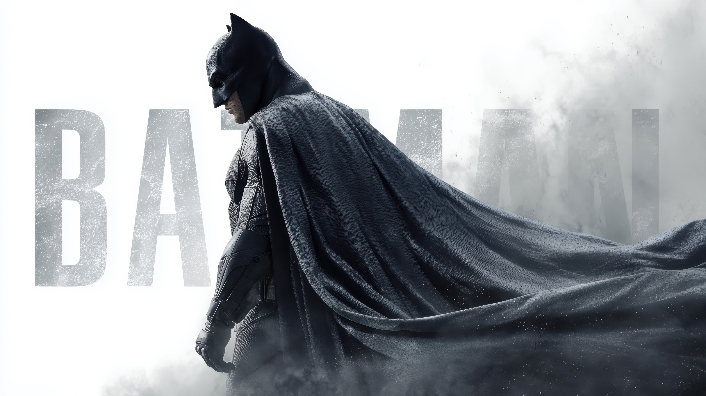
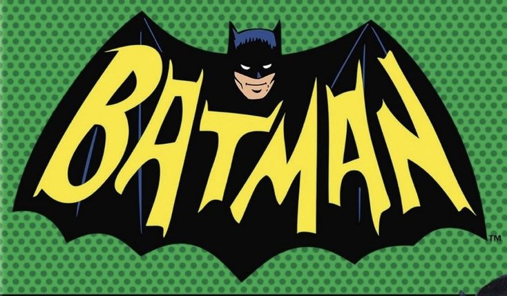
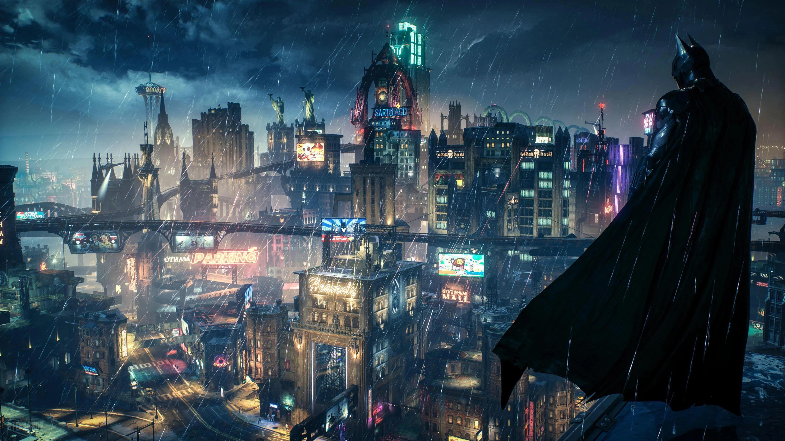

Escena de pelea final "The Batman"
Trailer oficial de Batman que muestra escenas emocionantes y el tono oscuro del personaje.
Página web sobre videos, soundtracks e imágenes de Batman
Trailer oficial de Batman que muestra escenas emocionantes y el tono oscuro del personaje.
Esta escena local muestra una parte icónica de una película de Batman para complementar el contenido multimedia.
Este contenido está embebido desde YouTube para mostrar otra forma de integrar multimedia dentro de la misma página.
Esta pista representa el ambiente oscuro y serio del personaje.
En esta parte se muestra un soundtrack embebido desde Spotify para complementar la sección de música.
Este segundo soundtrack amplía la sección de música con otra pista relacionada con Batman.

Imagen principal del personaje Batman.

El logo es uno de los símbolos más conocidos del personaje.

Gotham City es el escenario principal de muchas historias de Batman.
Haz clic en la imagen para abrir una galería con fondos de pantalla de Batman.

Este video recomendado amplía el contenido de Batman dentro de la misma página.
Otro video destacado para seguir explorando contenido multimedia.